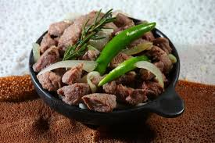

Tibs it is made from meat

This is calld Tibs
tibs is made from beef or camel meat
Ingredients
- meat
- spices
- some oil
- onion
- garlic
- green paper
Steps
- Cut the meat in small parts
- Add some oil in hot iron pan
- add the meat into the pan
- then after few minutes add the onion
- add salt or poweder of red peper
- add garlic and green paper